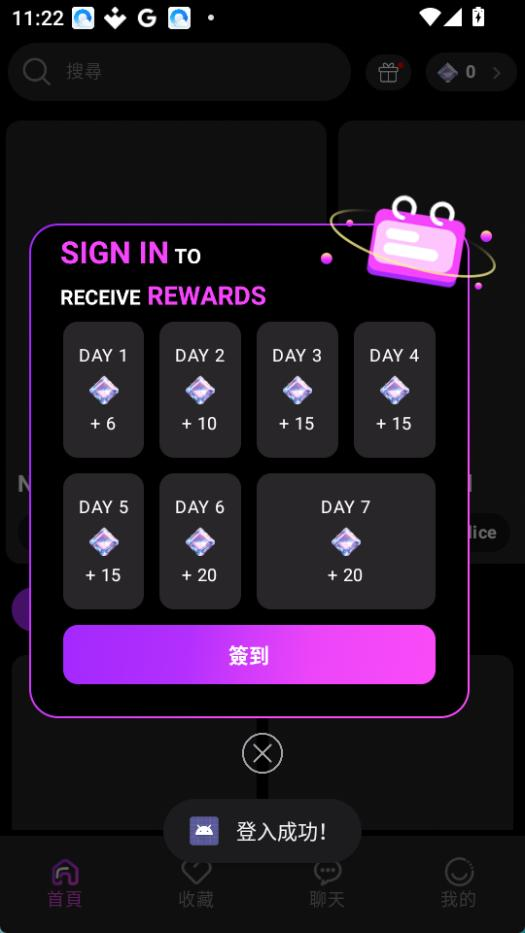

Melia 用了半个月，踩过这三个坑你就省心了
Melia 作为一款 AI 角色扮演聊天应用，上手门槛低得离谱，但访客模式数据丢失、消息发不出连环卡、安装权限卡壳这三个高频坑，真能把新手劝退。本文用第一人称踩坑经验逐条拆解症状、原因和解法。
第一次装 Melia 时我以为这就是个简单的聊天 App，欢迎页点一下就能进，连账号都不用注册。这是一款 AI 角色扮演类的手机应用，GP 下架后目前主要通过Melia官网分发。结果没到三天，连续踩了三个让我差点卸载的坑——今天把它们翻出来，给后面的人提个醒，省得你们像我一样重蹈覆辙。
第一个坑：访客模式原来在"裸奔"
症状：那天正跟一个校园角色聊得起劲，顺手清了个手机缓存（系统提示说有 2GB 垃圾），回头打开 Melia 整个人都傻了——收藏夹空了，之前花了好几天攒的亲密度进度全没了，签到面板重新从第一天开始计数，宝石余额直接归零。我当时以为是应用崩了，卸载重装了一遍，结果数据还是没回来。
原因：Melia 的访客模式看起来什么功能都能用，聊角色、签到、收藏一个不少，但它所有数据只存在本地设备上，没有同步到云端。清缓存、卸载应用、甚至手机系统自己的清理策略，都能把这些数据一笔勾销。我之前根本没意识到这一点，以为签到攒的宝石和聊天记录跟其他 App 一样是跟账号绑定的——结果访客模式压根儿没有账号这个概念。
解法：说穿了就是一句话——打算长期玩就尽早注册。Melía 的注册流程其实很快，邮箱加密码三十秒搞定，但我就是犯了"先用着再说"的懒。不过说真的，访客模式作为临时体验确实方便，毕竟零门槛就能进。问题在于你得给自己设一条线：聊到第几次、攒到多少宝石，就该注册了。我自己后来定的规则是，签到满七天当天必须转注册，之前丢的数据就当交学费了。

第二个坑：消息发不出去真的不是网络问题
症状：某天晚上八点多，我正想接着白天的对话往下聊，结果发一条转圈圈、发一条转圈圈，换了 Wi-Fi 还是不行，切到移动数据也没反应。我反复开关飞行模式重启应用折腾了快十分钟，差点以为服务器炸了。后来才发现根本不是那回事。
原因：Melia 发消息有一个宝石门槛，每发一条至少要 5 颗宝石。我当时余额正好剩 4 颗，系统不会弹出"宝石不足"的明确提示，就只给你一个转圈动画，让你以为是网络问题。这设计真是让人头大——把余额门槛藏起来，用户排查起来完全没方向。更让人崩溃的是，就算你余额够了，服务器限流的时候也会表现成同样的转圈。GP 下架后内购链路偶尔也会出问题，同一天突然全服发不出消息的情况我后来又遇到过一次，那次是过了三个小时自动恢复的。
解法：先查余额！Melia 界面右上角永远挂着当前宝石数，养成发消息前瞟一眼的习惯能省 90% 的排查时间。余额不够就去首页签到（每天至少 6 颗）或者充钱。余额够还发不出的话再切网络试试，Wi-Fi 和移动数据互切一次就行，别反复开关。如果这两步都不管用，那就不是你的问题了——要么服务器限流，要么内购系统挂了，等一两个小时再回来看看。还有一个小技巧：在聊天页右上角三点菜单里有个"重置对话"，有时候某段对话本身可能触发了什么风控，重置一下就能继续发。后面我去Melia文档翻了一下，这个方法确实是官方推荐的排查步骤之一。
第三个坑：安装权限卡得你怀疑人生
症状：从官方下载或网盘拿到 Melia 的 APK 后，点安装直接弹红框——"安装被阻止，Google Play 保护机制不允许此来源的应用"。我以为装完 APK 清一下就行，结果找不到开关在哪儿。小米的权限入口在安全设置里，华为在更多安全设置里，OPPO 藏在应用设置的某个子菜单下——我第一次在三星手机上找了十分钟才找到。
原因：Android 从某个版本开始加强了对未知来源应用的管控，每个品牌厂商又在自己的定制系统里改了权限入口的位置。Melia 因为 GP 下架了，只能走非官方渠道分发，所以每次安装都得手动给来源应用开权限。夸克网盘下载的得给夸克开，浏览器下载的得给浏览器开，文件管理器里装的还得给文件管理器开——它不是全局开关，是按应用单独授权的。
解法：别慌，通用逻辑就五步：点弹窗里的设置按钮 → 找到"安装未知应用"或"允许此来源" → 定位到你用来下载的那个应用 → 打开开关 → 回到安装器继续。不同品牌的具体路径不一样，但弹窗一般都会直接把你带到正确位置。真正容易卡壳的是弹窗没出现、你又不知道去哪找的时候。这时候记住最笨的办法也行：进系统设置搜"未知应用"四个字，大部分品牌系统都能直接搜到权限入口。还有个安全提醒——安装完成后建议把这个权限关掉，别一直开着，保持个好习惯。
最后给你一份防坑速查表
用了这段时间，把最容易踩的几个点浓缩成五条，以后遇到直接对照：
- 余额先看右上角，发不出消息第一反应是宝石不够，不是网络
- 访客模式别攒太多，真打算长期玩就早点注册，数据在云端才稳
- 重要聊天截个图，不管是不是注册用户，清缓存这种事防不胜防
- 安装权限别全局开，只给当前下载用的那个应用开，装完关掉
- 服务器挂了别折腾，同一天突然发不出大概率是限流，等几小时就好
其实说穿了，Melia 本身是个挺省心的应用——角色素材质量不错，聊天响应速度也快，访客模式零门槛这个设计在同类里算是很友好的。坑主要集中在它被 GP 下架后的分发和内购链路上，以及一些容易被忽视的本地存储细节。知道这些坑之后，这软件其实相当省心。整理的这些排查资料我也同步放进了GitHub、Gitee、GitCode三个仓库，国内访问慢的话可以换后面两个试试。